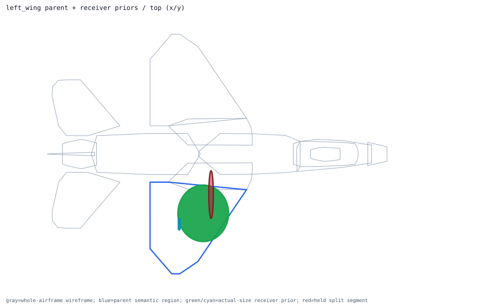
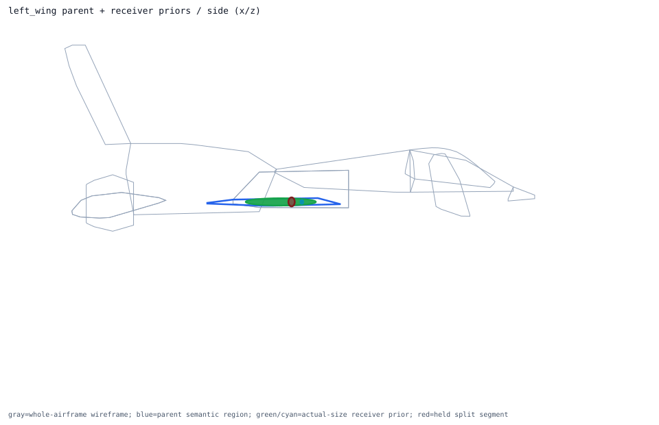
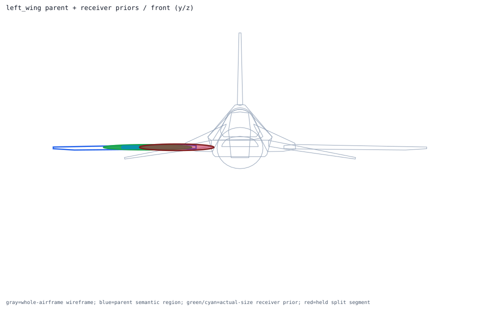

Back to parent-child layout index
semantic_left_wing_skin_volume
thin_prism parent -> left_wing; receiver overlays 2; extra slots 1
Trace Details
- parent semantic component: semantic_left_wing_skin_volume
- parent surface component: surface_left_wing_skin
- outer model region: left_wing
- volume role: left_wing_skin_volume
- geometry primitive: thin_prism
- primary receiver: left_wing_fuel_cell
- extra receivers: left_aileron_actuator
- cross-region held receivers: none
- external held split segments: wing_spar_center_left_inner_wing_segment
- parent handoff: direct_receivers_parse_ready_cross_region_receivers_held
- layout policy: one_parent_semantic_shell_view_with_receiver_priors_overlaid
- runtime projection: review_only_visual_layout_not_runtime_activation
- child overlays:
- primary_receiver_overlay: left_wing_fuel_cell ellipsoid dims=[2.0, 2.2, 0.15]m evidence=public_total_capacity_partition_estimate segments=0 -> already_inside_whole_airframe
- extra_receiver_overlay: left_aileron_actuator capsule dims=[0.08, 0.45, 0.08]m evidence=low_confidence_engineering_proxy segments=0 -> already_inside_whole_airframe
- external held segment overlays:
- wing_spar_center:wing_spar_center_left_inner_wing_segment ellipsoid owners=['left_wing'] dims=[0.18, 1.85, 0.18]m


